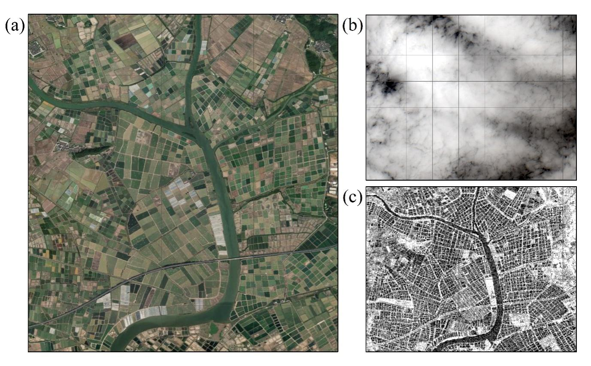
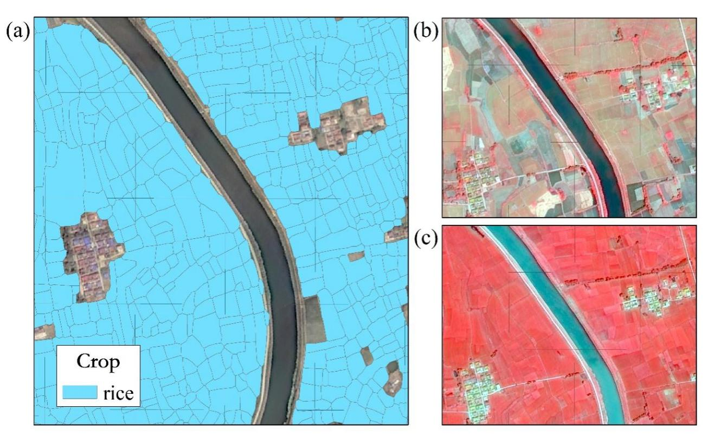
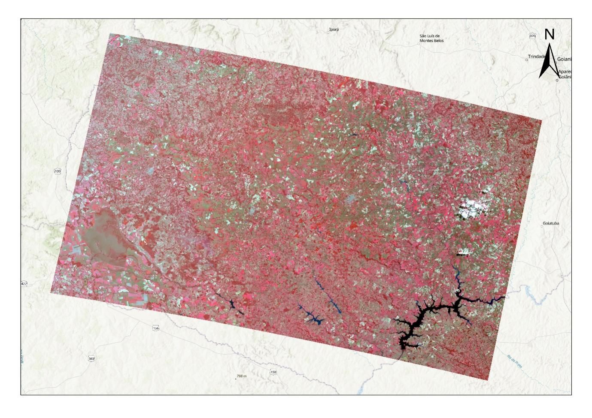
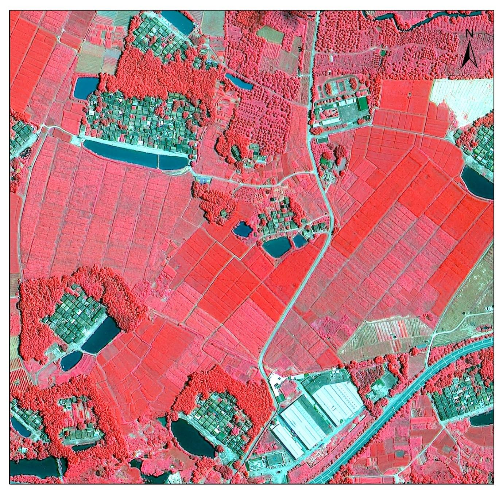
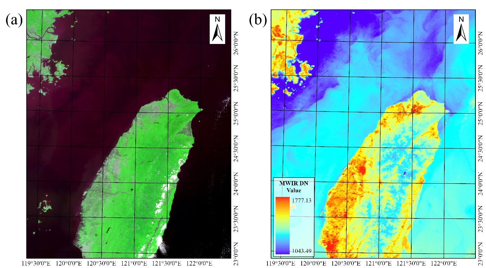
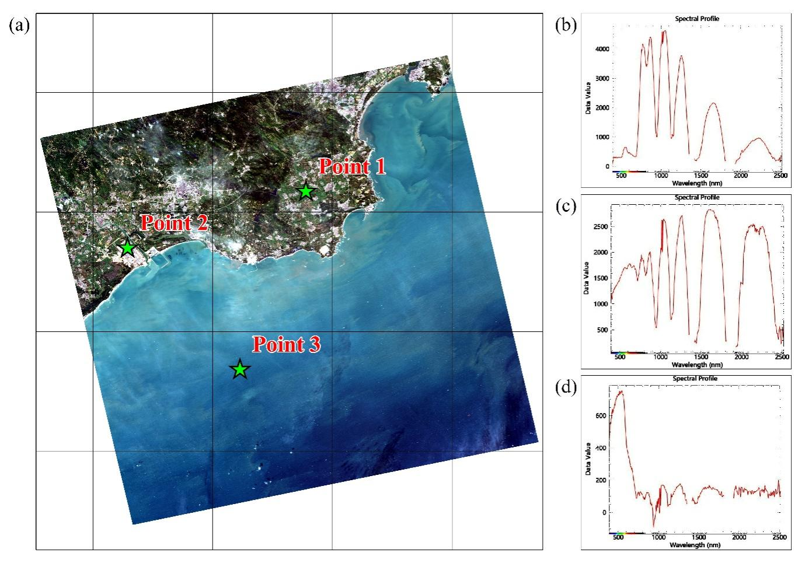
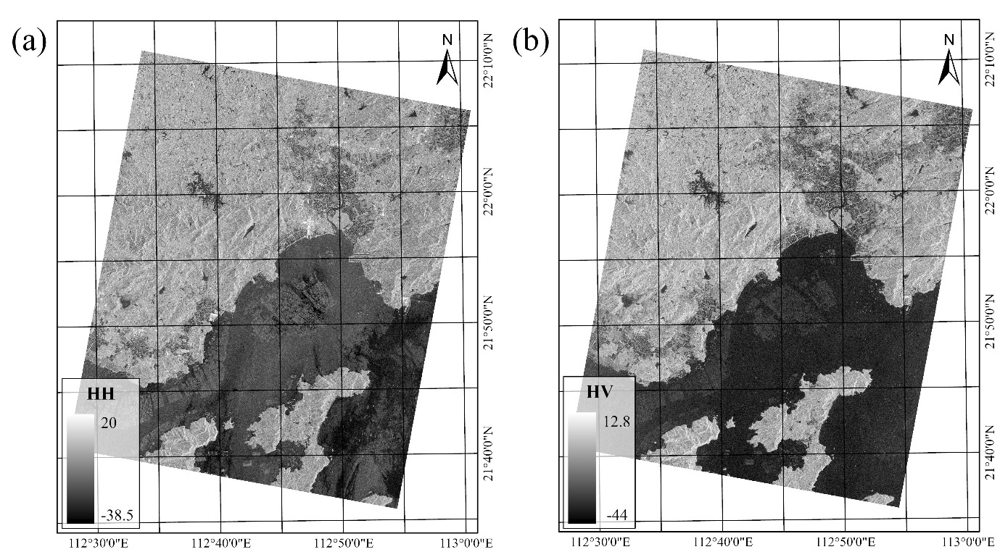
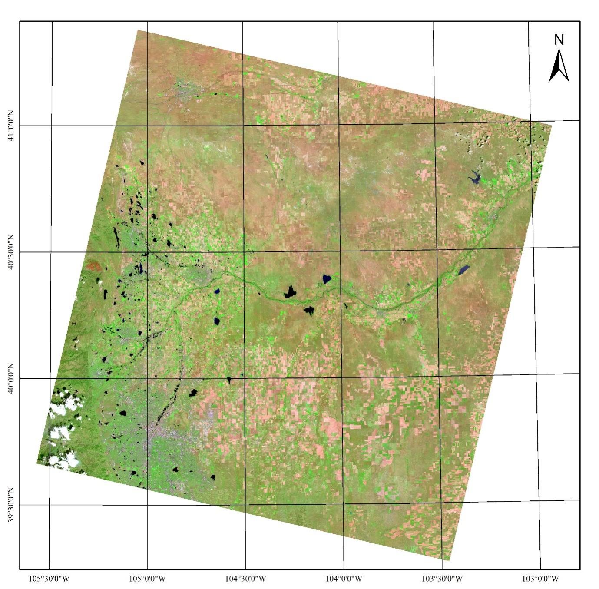
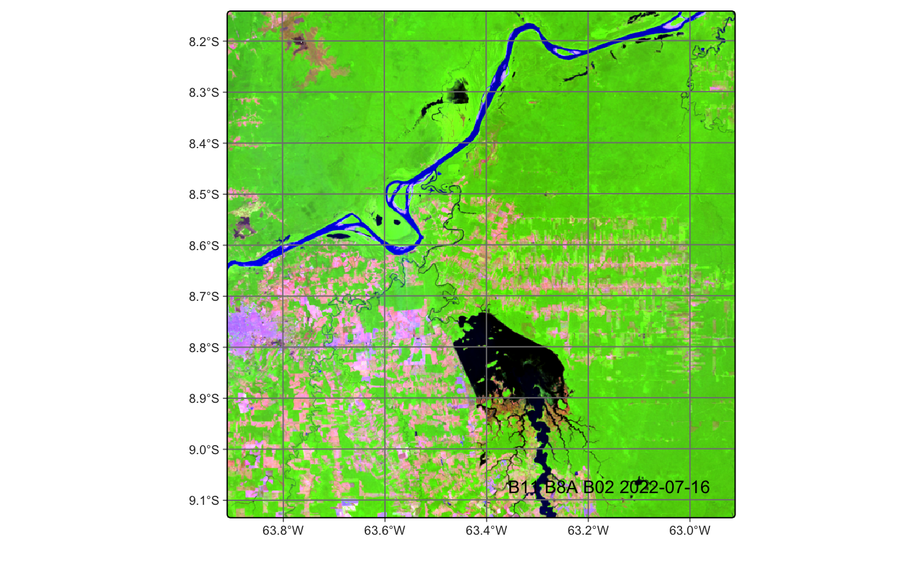

4 Remote sensing images: optical, SAR
4.1 Outline
This chapter provides a general introduction to remote sensing imagery. The authors discuss different types of remote sensing satellites (optical, SAR, hyperspectral) and include examples of satellite constellations (e.g, Landsat, Copernicus, CHEOS). The chapter describes the main characteristics of various Earth observation satellites. For a description of how to access satellites from the Copernicus and Landsat programmes, please refer to chapter on Earth Observation Data Sources.
4.2 Introduction of remote sensing imagery
Remote sensing imagery refers to data collected by sensors mounted on satellite platforms, used to observe and analyze the Earth’s surface and its atmosphere from a distance. These images capture information about various phenomena and play an important role in the study of the surface of the Earth. These images are usually comprised of multiple bands and important for the study of agriculture statistics, land cover/land use and other different tasks. In agriculture statistics, remote sensing applications are based on the interaction of electromagnetic radiation with soil or plant material. The advantage of remote sensing in agriculture is its ability to provide detailed information about crop characteristics. For example, spectral, textural, phenological features can be used to create a map showing plant distribution. Indicators such as Normalized Difference Vegetation Index (NDVI), Leaf Area Index (LAI), biomass, crop density can be used to assess vegetation growth.
Remote sensing imagery is broadly classified into two main categories based on the type of sensors used: optical remote sensing imagery and radar remote sensing imagery. Optical sensors (e.g., cameras or imaging spectrometers) primarily capture electromagnetic radiation in spectral bands such as visible light, near-infrared, or short-wave infrared. Radar remote sensing imagery, especially in the context of Earth observation, is predominantly associated with Synthetic Aperture Radar (SAR).
Table 1 The class and applications of remote sensing
| Class | Bands | Wavelength |
| Optical | visible light | violet (0.380 - 0.450 µm) |
| blue (0.450 - 0.485 µm) | ||
| cyan (0.485 - 0.500 µm) | ||
| green (0.500 - 0.565 µm) | ||
| yellow (0.565 - 0.590 µm) | ||
| orange (0.590 - 0.625 µm) | ||
| red (0.625 - 0.750 µm) | ||
| near-infrared | 0.750 - 1.00 µm | |
| short-wave infrared | 1.0 - 3.0 µm | |
| thermal | 3 - 14.5 µm | |
| Microwave | SAR | 1 mm – 1 m |
Optical remote sensing imagery makes use of visible, near-infrared and short-wave infrared sensors (passive optical sensors) to form images of the Earth’s surface by receiving the solar radiation reflected from targets on the ground. Ground objects reflect and absorb radiation differently at each wavelength. Thus, the targets can be distinguished by their spectral reflectance signatures in the remote sensing imagery. Vegetation has a unique spectral signature. This signature enables it to be distinguished readily from other types of land cover in an optical/near-infrared image. For specific crops, due to their spectral and phenological characteristics, the combination of phenological period information with multi-temporal remote sensing imagery can be used to explore a crop area and its status in the growing season.
Radar satellites emit its own microwave signals and analyze the returning echoes. This capability allows radar to penetrate clouds, haze, and even vegetation canopies, providing data regardless of daylight or weather conditions.
4.3 Chinese Earth observation satellites
Gaofen (GF, “High Resolution”) is a series of civilian Earth observation satellites developed and launched for the China High-resolution Earth Observation System (CHEOS), a state-sponsored programme aimed to develop a near-real time, all-weather, global surveillance network consisting of satellite, near-space (stratosphere) airships, and aerial observation platforms. Among these satellites, Gaofen 1 (GF-1), Gaofen 2 (GF-2), Gaofen 4 (GF-4), Gaofen 5 (GF-5), Gaofen 6 (GF-6), Gaofen 7 (GF-7) are optical satellites. They all play an important role in remote sensing for agriculture statistics.

GF-1 and GF-6 are the Earth observation satellites operating in a 650 km Sun-Synchronous Orbit (SSO). The first GF-1 satellite was launched on April 26, 2013 and GF-6 satellite was launched on June 2, 2018. They are equipped with two high-resolution cameras and four medium-resolution wide-field cameras. The Panchromatic/Multispectral Sensor (PMS) can capture Earth imagery with a spatial resolution of 2 m in the panchromatic or black-and-white mode, and 8 m in the multispectral or color imagery. Its nominal revisit cycle is 64 days. Using its onboard pointing capabity, a specific target area can be surveyed every four days. The Wide Field View Sensor (WFV) offer a spatial resolution of 16 m and ground swath width of 800 km, allowing the satellite to collect the imagery of entire globe in only 4 days (Table 4.2).
| Sensor. ensor | Band number | Spectral range | Spatial resol. | Bit Depth | Swath Width | Revisit cycle. |
|---|---|---|---|---|---|---|
| Panch romatic | B1 | 0.45 - 0.90 µm | 2 m | 12 bit | GF-1 > 60 km | 32 days |
| GF-6 > 90 km | ||||||
| Multis pectral | B2 | 0.45 - 0.52 µm | 8 m | |||
| B3 | 0.52 - 0.59 µm | 8 m | ||||
| B4 | 0.63 - 0.69 µm | 8 m | ||||
| B5 | 0.77 - 0.89 µm | 8 m | ||||
| Wide Field Viewer | B6 | 0.45 - 0.52 µm | 16 m | > 800 km | 4 days | |
| B7 | 0.52 - 0.59 µm | 16 m | ||||
| B8 | 0.63 - 0.69 µm | 16 m | ||||
| B9 | 0.77 - 0.89 µm | 16 m |

The GF-2 satellite was launched on August 19, 2014. It was designed and developed by China Academy of Space Technology (CAST). It is capable of collecting satellite imagery with a Ground Sampling Distance (GSD) of 0.8 m panchromatic and 3.2 m multispectral bands on a swath of 45 km. GF-2 supports applications in Geographic Information System (GIS) mapping, engineering and construction, climate change, environmental monitoring, precision agriculture, disaster relief, urban planning, and many other applications. Due to its submeter spatial resolution, it is very important to precision agriculture. Its nominal revisit cycle is 64 days. Using its onboard pointing capabity, a target area can be surveyed every five days.
| Sensor | Band number | Spectral range | Spatial resol. | Bit Depth | Swath Width | Revisit cycle |
|---|---|---|---|---|---|---|
| Panch | B1 | 0.45 - | 0.8 m | 10 bit | 45 km | 64 days |
| Multis pectral | B2 | 0.45 - 0.52 µm | 3.2 m | |||
| B3 | 0.52 - 0.59 µm | 3.2 m | ||||
| B4 | 0.63 - 0.69 µm | 3.2 m | ||||
| B5 | 0.77 - 0.89 µm | 3.2 m |

GF-4 is designed for Earth observation from a geosynchronous orbit and it has different features: high spatial resolution, multiple payload types, strong maneuverability, large swath width and rapid imaging. Its first satellite was launched on December 29, 2015. GF-4 features a visible light and infrared staring optical imager with common optical system. The ground resolution for the visible light imager is 50 m and for the Mid-Wave Infrared (MWIR) payload is 400 m. This payload allows the observation of China and the surrounding areas with a high temporal resolution. GF-4 data application includes disaster monitoring, meteorological observation agriculture and so on.
| Sensor | Band number | Spectral range | Spatial resol. | Bit Depth | Swath Width | Revisit cycle |
|---|---|---|---|---|---|---|
| Panch romatic | B1 | 0.45 - 0.90 µm | 50 m | 10 bit | 400 km | 20 seconds |
| Multis pectral | B2 | 0.45 - 0.52 µm | 50 m | |||
| B3 | 0.52 - 0.59 µm | 50 m | ||||
| B4 | 0.63 - 0.69 µm | 50 m | ||||
| B5 | 0.76 - 0.90 µm | 50 m | ||||
| B6 | 3.50 - 4.10 µm | 400 m |

The GF-5 satellite was launched on May 9, 2018. It simultaneously conduct comprehensive observations of both land and atmosphere. It is configured with six types of payloads, including Advanced Hyperspectral Imager (AHSI), Visual and Infrared Multispectral Sensor (VIMS), Greenhouse-gases Monitoring Instrument (GMI), atmospheric infrared ultraspectral (AIUS), environment monitoring instrument (EMI), directional polarization camera (DPC). GF-5 can acquire 330 spectral bands within the range from visible light to short-wave infrared (400-2500 nm).
| Sensor. | Spectral Range | Spectral resolution | Spatial resolution | Swath Width. |
|---|---|---|---|---|
| AHSI | 0.40 - 2.50 µm |
VNIR : 5 nm, SWIR : 10 nm |
30 m | 60 km |
| VIMS | 0.45 - 0.52 µm | n/a | 20 m | |
| 0.52 - 0.60 µm | ||||
| 0.60 - 0.68 µm | ||||
| 0.76 - 0.86 µm | ||||
| 1.55 - 1.75 µm | ||||
| 2.08 - 2.35 µm | ||||
| 3.50 - 3.90 µm | 40 m | |||
| 4.85 - 5.05 µm | ||||
| 8.01 - 8.39 µm | ||||
| 8.42 - 8.83 µm | ||||
| 10.30 - 11.30 µm | ||||
| 11.40 - 12.50 µm | ||||
| GMI | 0.759 - 0.769 µm | 0.6 cm 0.27 cm | 10.3 km | |
| 1.568 - 1.583 µm | ||||
| 1.642 - 1.658 µm | ||||
| 2.043 - 2.058 µm | ||||
| AIUS | 750 - 4100 cm (2.4 – 13.3 µm) | 0.03 cm | n/a | |
| EMI | 240 - 315 nm | 0.3 - 0.5 nm |
48 km 13 km |
|
| 311 - 403 nm | ||||
| 401 - 550 nm | ||||
| 545 - 710 nm | ||||
| DPC | 433 - 453 nm | n/a | 3.5 km | |
| 480 - 500 nm (P) | ||||
| 555 - 575 nm | ||||
| 660 - 680 nm | ||||
| 758 - 768 nm | ||||
| 745 - 785 nm | ||||
| 845 - 885 nm | ||||
| 900 - 920 nm |

GF-7 was launched on November 3, 2019. It is an optical satellite for mapping purposes for Former National Administration of Surveying, Mapping and Geoinformation of China (NASG) similar, but improved, to the earlier ZY-3. GF-7 is China’s first civilian sub-meter resolution optical stereo mapping satellite and it features two camera systems for mapping and surveying and a laser altimeter so that it is capable of acquiring high spatial resolution optical stereo observation data and high-precision laser altimetry data.
| Sensor | Band number | Spectral range | Spatial resol. | Bit Depth | Swath Width | Revisit cycle |
|---|---|---|---|---|---|---|
| Panch romatic | B1 | 0.45 - 0.90 µm | 0.8 | 11 bit | 200 km | 60 days |
| Multis pectral | B2 | 0.45 - 0.52 µm | 2.6 m | |||
| B3 | 0.52 - 0.59 µm | 2.6 m | ||||
| B4 | 0.63 - 0.69 µm | 2.6 m | ||||
| B5 | 0.76 - 0.89 µm | 2.6 m |
All GF optical remote sensing imagery can be purchased and downloaded on the website of China Center For Resources Satellite Data And Application. GF-1 WFV, GF-4, GF-6 WFV are free. After signing up, the data can be downloaded directly without limits. GF-1 PMS、GF-2 PMS、GF-5 and GF-6 PMS require payment.
Among the GF series of satellites, GF-3 is specifically designed as a radar remote sensing. GF-3 was launched on August 10, 2016. It is the first civilian C-band fully polarimetric Synthetic Aperture Radar (SAR) imaging satellite of China National Space Administration (CNSA), equipped with a multi-polarized C-band SAR at meter-level resolution. GF-3’s SAR package can operate in 12 different working modes, from high-resolution (1 m) to large-swath (650 km), and operate in all-weather, day/night conditions.
| Observing Mode | Polarization | Incidence angle | Resolution | Swath |
|---|---|---|---|---|
| Spotlight | single | 20~50° | 1m | 10 km |
| Ultra-fine stripmap | dual | 20~50° | 3m | 30 km |
| Fine stripmap | dual | 19~50° | 5m | 50 km |
| Wide fine stripmap | dual. | 19~50° | 10m | 100 km |
| Standard stripmap | dual. | 17~50° | 25m | 250 km |
| Narrow ScanSAR | dual | 17~50° | 50m | 300 km |
| Wide ScanSAR | dual | 17~50° | 100m | 500 km |
| Global observation | dual | 17~50° | 500m | 650 km |
| Quad-pol stripmap | quad | 20~41° | 8m | 30 km |
| Wide quad-pol | quad | 20~38° | 25m | 40 km |
| Wave | quad | 20~41° | 10m | 5 km |
| Exp incidence angle | dual | 10~20° | 25m | 130 km |
| dual | 50~60° | 25m | 80 km |
All the GF-3 SAR remote sensing imagery requires payment and can be purchased on the website of China Center For Resources Satellite Data and Applications.

4.4 Landsat programme
The Landsat program consists of a series of Earth-observing satellite missions jointly managed by National Aeronautics and Space Administration (NASA) and the U.S. Geological Survey (USGS). Landsat-9 is the latest satellite in the Landsat series. It was launched in September 27, 2021. Landsat-9 carries two science instruments including the Operational Land Imager2(OLI-2) and Thermal Infrared Sensor2(TIRS-2) and enables informed decision support for many key areas.
| Sensor | Band number | Spectral range | Spatial resol. | Bit Depth | Swath Width | Revisit cycle | Description |
|---|---|---|---|---|---|---|---|
| OLI-2 | B1 | 0.43 - 0.45 µm | 30 m | 16 bit | 185 km | 16 days | Coastal aerosol |
| B2 | 0.45 - 0.51 µm | Blue | |||||
| B3 | 0.53 - 0.59 µm | Green | |||||
| B4 | 0.64 - 0.67 µm | Red | |||||
| B5 | 0.85 - 0.88 µm | Near infrared | |||||
| B6 | 1.57 - 1.65 µm | Shortwave IR 1 | |||||
| B7 | 2.11 - 2.29 µm | Shortwave IR 2 | |||||
| B8 | 0.52 - 0.90 µm | 15 m | Panchromatic | ||||
| B9 | 1.36 - 1.38 µm | 100 m | Cirrus | ||||
| TIRS-2 | B10 | 10.60 - 11.19 µm | Thermal IR 1 | ||||
| B11 | 11.50 - 12.51 µm | Thermal IR 2 |

Landsat imagery can be downloaded for free from the USGS Earth Explorer or from cloud providers such as Microsoft Planetary Computer. Please refer to the chapter Earth observation big data sources for a description of how to access remote sensing data in cloud collections.
4.5 Copernicus Programme
The Copernicus Programme is headed by the European Commission in partnership with the European Space Agency (ESA) that implements a constellation of satellites called Sentinels. These satellites include all-weather radar images from Sentinel-1A and 1B, high-resolution optical images from Sentinel-2A and 2B, ocean and land data suitable for environmental and climate monitoring from Sentinel-3, as well as air quality data from Sentinel-5P.
4.5.1 Sentinel-1 mission
The Sentinel-1 mission, operated by the European Space Agency (ESA), consists of a constellation of C-band Synthetic Aperture Radar (SAR) satellites designed to provide continuous, all-weather, day-and-night Earth observation capabilities. Operating at a central frequency of approximately 5.405 GHz, corresponding to a wavelength of 5.6 cm, the system offers multiple polarization configurations, including single-polarization modes (HH or VV) and dual-polarization modes (HH+HV or VV+VH). These options allow for flexibility in addressing diverse application requirements, ranging from high-resolution terrestrial monitoring to large-area maritime surveillance.
Sentinel-1 supports four primary imaging modes, each optimized to balance spatial resolution, swath width, and revisit frequency according to the observational context. The Stripmap (SM) mode provides a swath width of approximately 80 km at a spatial resolution of about 5 m in both range and azimuth directions, making it suitable for applications demanding fine spatial detail over relatively narrow swaths, such as scientific investigations and precision mapping. The Interferometric Wide Swath (IW) mode, which constitutes the default operational mode over land, achieves a swath width of roughly 250 km and a spatial resolution of about 5 m (range) by 20 m (azimuth). This mode employs the Terrain Observation by Progressive Scans (TOPS) technique, enabling high interferometric coherence and reduced azimuth scalloping, thereby supporting deformation monitoring, land-cover mapping, and interferometric SAR (InSAR) applications.
The Extra-Wide Swath (EW) mode, predominantly employed for maritime and cryospheric applications, covers a swath of approximately 400 km with a spatial resolution of 20 m (range) by 40 m (azimuth). Its wide coverage facilitates large-scale change detection, sea-ice monitoring, and vessel tracking. Finally, the Wave (WV) mode acquires small image segments, or imagettes, of 20 km swath width at intervals of approximately 100 km along the satellite ground track, with a spatial resolution of about 5 m × 5 m. This mode is specifically designed for the retrieval of ocean wave spectra and sea state parameters.
In summary, the Sentinel-1 mission offers a set of operational modes that balance resolution and coverage to meet the diverse observational requirements of land, ocean, and ice monitoring. Its flexible polarization schemes and consistent revisit capabilities make it a cornerstone in global SAR-based Earth observation programs.
| Mode | Swath (km) | Resolution (m) | Typical Use | Polarization |
|---|---|---|---|---|
| SM | 80 | 5 × 5 | Detailed mapping, science | Single/Dual |
| IW | 250 | 5 × 20 | Land, InSAR, deformation | Single/Dual |
| EW | 400 | 20 × 40 | Maritime, sea ice, large-scale change | Single/Dual |
| WV | 20 (imagettes) | 5 × 5 | Ocean waves, sea state | Single |
Sentinel-1 products are openly available from cloud providers such as Copernicus Data Space Ecosystem and Microsoft Planetary Computer. Please refer to the chapter Earth observation big data sources for a description of how to access remote sensing data in cloud collections.
4.5.2 Sentinel-2 mission
The Sentinel-2 mission, developed under the European Union’s Copernicus Programme and operated by the European Space Agency (ESA), consists of a constellation of polar-orbiting satellites, Sentinel-2A (launched in June 2015), Sentinel-2B (launched in March 2017), and Sentinel-2C (launched in September 2024). The Sentinel-2 satellites are equipped with the MultiSpectral Instrument (MSI), a push-broom imaging sensor that acquires data in 13 discrete spectral bands spanning the visible, near-infrared (NIR), and shortwave infrared (SWIR) regions of the electromagnetic spectrum. The MSI is designed to provide high spatial resolution (10 m, 20 m, or 60 m depending on the spectral band) over a swath width of 290 km, enabling systematic coverage of terrestrial and coastal ecosystems.
The mission supports a broad range of applications, including vegetation monitoring, agricultural management, forestry assessment, inland and coastal water quality mapping, disaster risk reduction, and land use/land cover classification. The Sentinel-2 satellites are the first civil optical Earth observation mission of its kind to include three bands in the ‘red edge’, which provides key information on the vegetation state. Sentinel-2 satellite will be able to see very early changes in plant health due to its high temporal, spatial resolution, and 3 red edge bands. This is particularly useful for the end-users and policymakers for agriculture applications and to detect early signs of food shortages in different places.
| Band | Name | Central Wavelength (nm) | Bandwidth (nm) | Spatial Resolution (m) | Primary Applications |
|---|---|---|---|---|---|
| B1 | Coastal aerosol | 443 | 20 | 60 | Aerosol studies, coastal and atmospheric correction |
| B2 | Blue | 490 | 65 | 10 | Bathymetry, vegetation, and soil discrimination |
| B3 | Green | 560 | 35 | 10 | Vegetation vigor, biomass estimation |
| B4 | Red | 665 | 30 | 10 | Vegetation monitoring, soil-vegetation discrimination |
| B5 | Red Edge 1 | 705 | 15 | 20 | Chlorophyll estimation, vegetation stress detection |
| B6 | Red Edge 2 | 740 | 15 | 20 | Vegetation classification, canopy structure |
| B7 | Red Edge 3 | 783 | 20 | 20 | Leaf area index, vegetation biophysical parameters |
| B8 | Near Infrared (NIR) | 842 | 115 | 10 | Biomass, water body delineation, vegetation vigor |
| B8A | Narrow NIR | 865 | 20 | 20 | Canopy chlorophyll content, vegetation structure |
| B9 | Water vapour | 945 | 20 | 60 | Atmospheric water vapour retrieval |
| B10 | SWIR – Cirrus | 1375 | 30 | 60 | Cirrus cloud detection |
| B11 | SWIR 1 | 1610 | 90 | 20 | Vegetation moisture, burned area mapping |
| B12 | SWIR 2 | 2190 | 180 | 20 | Soil composition, snow/ice discrimination, vegetation moisture |

Sentinel-2 products are openly available from cloud providers such as Copernicus Data Space Ecosystem, Amazon Web Services and Microsoft Planetary Computer. Please refer to the chapter Earth observation big data sources for a description of how to access remote sensing data in cloud collections.
4.6 Final remarks
Multi-source satellite remote sensing facilitates coordinated global observation through orbital synergy, while the integration of optical imagery and SAR datasets enables multisensor data collection across heterogeneous meteorological regimes. This synergistic complementarity between spectral resolution and all-weather capability holds significant implications for enhancing the spatiotemporal continuity and operational robustness of agricultural statistical monitoring systems.